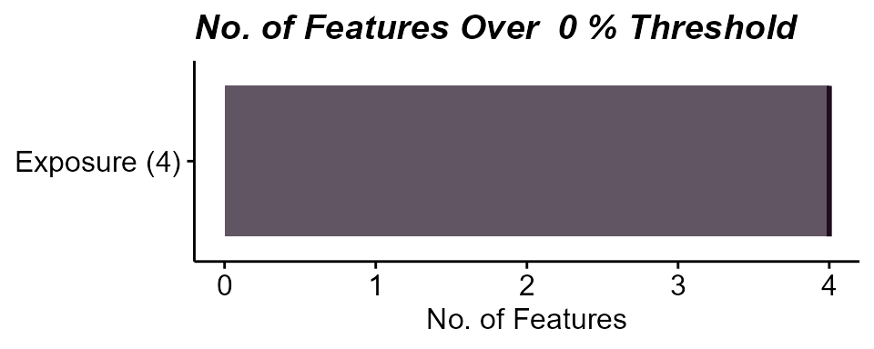
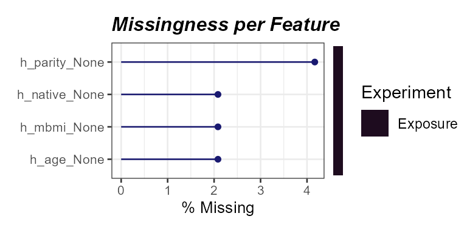
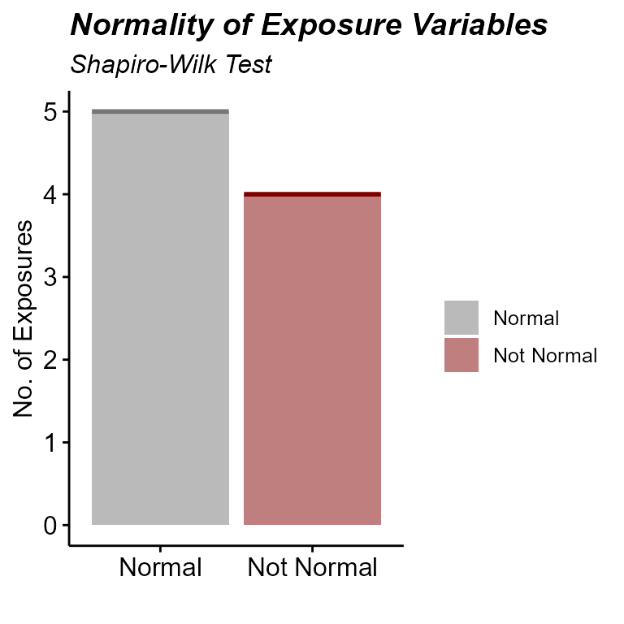
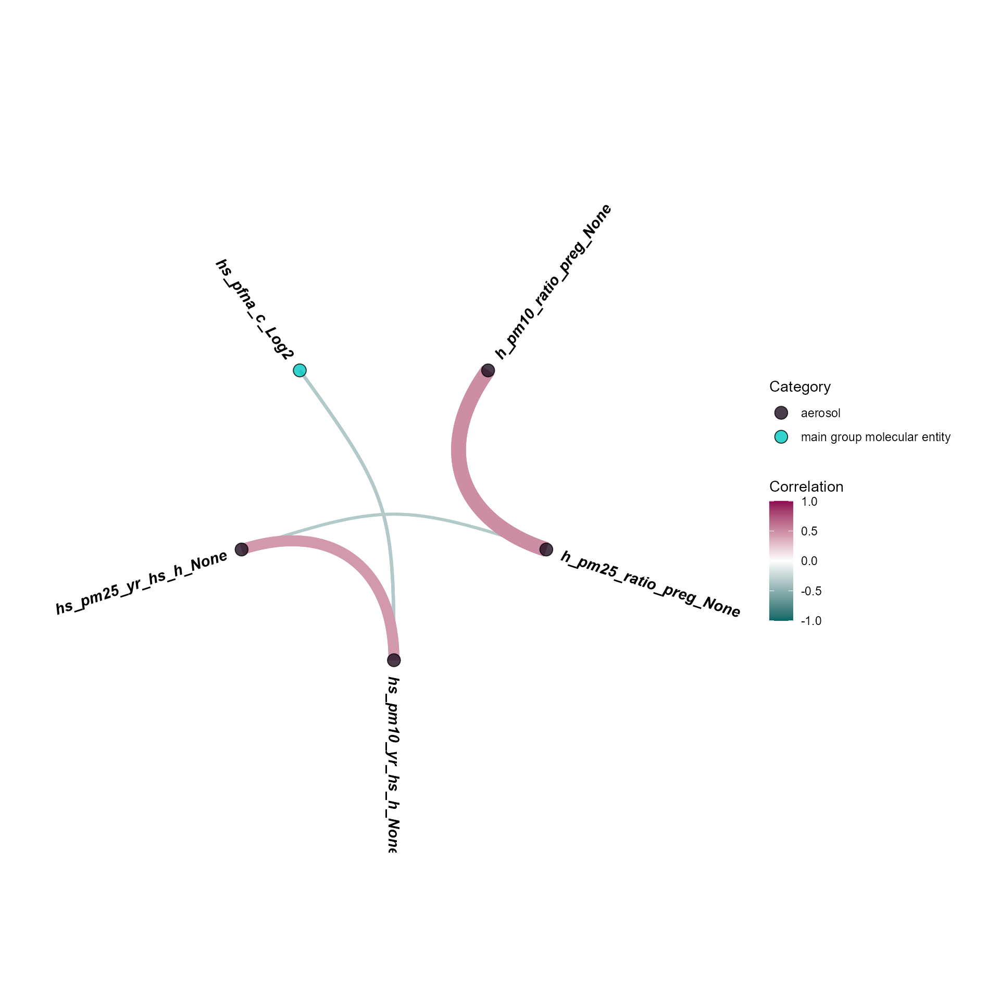
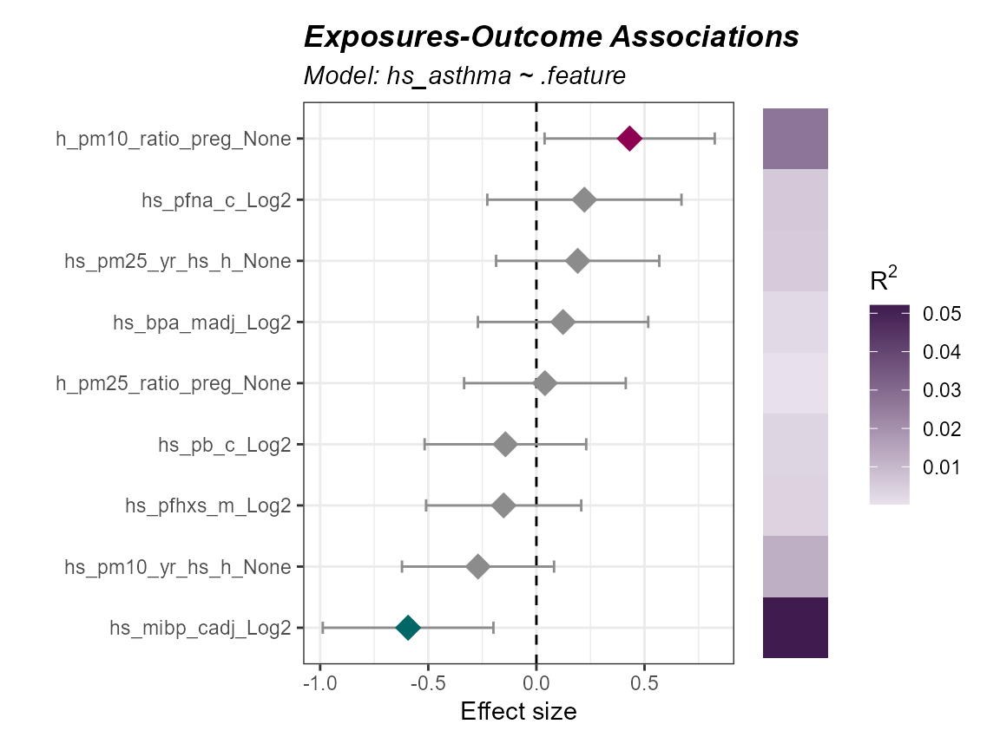
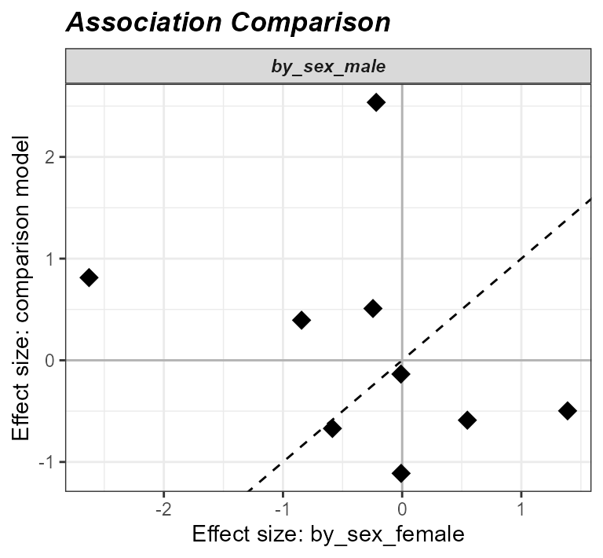

Exposure-Phenotype Workflow
Jason Laird
Source:vignettes/exposure_phenotype_workflow.Rmd
exposure_phenotype_workflow.Rmd- Create an
exposomicsetobject from a codebook and exposure metadata. - Identify and visualize missing values in exposure data.
- Impute missing exposure values.
- Assess variable normality and apply transformations to improve it.
- Understand which exposures/samples are correlated with one another.
- Determine if exposures/samples cluster into groups.
- Run an exposome-wide association study (ExWAS) to test many exposures against a single outcome.
- Fit interaction models to test whether an exposure-outcome relationship depends on another variable.
- Stratify models or subset samples to examine specific subgroups.
- Compare effect estimates across models.
- Summarize multiple exposures into a single exposome score.
- Test exposome scores against an outcome and vizualize.
Exposure Preprocessing
Getting the data in order
To get started with an exposure-outcome-only workflow, we need to create our exposomicset which stores this data:
# Load Libraries
library(tidyexposomics)
# Load example data
data("tidyexposomics_example")
# Create exposomic set object
expom <- create_exposomicset(
codebook = tidyexposomics_example$annotated_cb,
exposure = tidyexposomics_example$meta
)You’ll notice it took two inputs: (1) a codebook with information about the exposures (see more about codebooks here), and (2) the meta data which contain the exposures and covariate information.
For the sake of simplicity we will focus on a short list of exposures:
# Grab exposure variables
exp_vars <- tidyexposomics_example$annotated_cb |>
dplyr::filter(
category %in% c(
"aerosol",
"main group molecular entity",
"polyatomic entity"
)
) |>
dplyr::pull(variable) |>
as.character()Quality Control
Missingness
Oftentimes when collecting data, there are missing values. Let’s use
the plot_missing function to determine where our missing
values are:
# Plot the missingness summary
plot_missing(
exposomicset = expom,
plot_type = "summary",
threshold = 0
)
Here we see that there are 4 variables in the exposure data that are missing data. Let’s take a look at them:
# Plot missing variables withing exposure group
plot_missing(
exposomicset = expom,
plot_type = "lollipop",
threshold = 0,
layers = "Exposure"
)
Here we see that one variable, h_parity_None, has about
4% missing values. We can apply a missingness filter using the
filter_missing function. However, given that this level of
missingness is quite low, we will not be applying a missingness filter
and instead impute the missing data.
Imputation
The run_impute_missing function is used to impute
missing values. Here we can specify the imputation method for exposure
and omics data separately.
The exposure_impute_method argument is used to set the
imputation method for exposure data, and the
omics_impute_method argument is used to set the imputation
method for omics data. The omics_to_impute argument is used
to specify which omics data to impute. Here we will impute the exposure
data given using the missforest method, but other options
for imputation methods include:
median: Imputes missing values with the median of the variable.mean: Imputes missing values with the mean of the variable.knn: Uses k-nearest neighbors to impute missing values.mice: Uses the Multivariate Imputation by Chained Equations (MICE) method to impute missing values.missforest: Uses the MissForest method to impute missing values.lod_sqrt2: Imputes missing values using the square root of the lower limit of detection (LOD) for each variable. This is useful for variables that have a lower limit of detection, such as chemical exposures.
# Impute missing values
expom <- run_impute_missing(
exposomicset = expom,
exposure_impute_method = "missforest",
exposure_cols = exp_vars
)Normality Check
When determining variable associations, it is important to check the
normality of the data. The run_normality_check function is
used to check the normality of the data.
# Check variable normality
expom <- run_normality_check(
exposomicset = expom,
action = "add"
)The transform_exposure function is used to transform the
data to make it more normal. Here the transform_method is set to
boxcox_best as it will automatically select the best
transformation method based on the data. The
transform_method can be manually set to log2,
sqrt, or x_1_3 as well. We specify the
exposure_cols argument to set the columns to transform.
# Transform variables
expom <- transform_exposure(
exposomicset = expom,
transform_method = "boxcox_best",
exposure_cols = exp_vars
)To check the normality of the exposure data, we can use the
plot_normality_summary function. This function plots the
normality of the data before and after transformation. The
transformed argument is set to TRUE to plot
the normality status of the transformed data.
# Examine normality summary
plot_normality_summary(
exposomicset = expom,
transformed = TRUE
)
Exposure Summary
We can summarize the exposure data using the
run_summarize_exposures function. This function calculates
summary statistics for each exposure variable, including the number of
values, number of missing values, minimum, maximum, range, sum, median,
mean, standard error, and confidence intervals. The
exposure_cols argument determines which variables to
include in the summary.
# Summarize exposure data
run_summarize_exposures(
exposomicset = expom,
action = "get",
exposure_cols = exp_vars
) |>
head()## # A tibble: 6 × 27
## variable n_values n_na min max range sum median mean se ci_lower
## <chr> <dbl> <dbl> <dbl> <dbl> <dbl> <dbl> <dbl> <dbl> <dbl> <dbl>
## 1 h_pm10_ra… 48 0 16.6 25.8 9.25 1.01e3 21.3 21.0 0.31 20.4
## 2 h_pm25_ra… 48 0 10.6 18.2 7.55 7.12e2 14.7 14.8 0.24 14.3
## 3 hs_bpa_ma… 48 0 0 2.31 2.31 7.30e1 1.58 1.52 0.05 1.41
## 4 hs_mibp_c… 48 0 0.1 0.22 0.11 7.83e0 0.17 0.16 0 0.16
## 5 hs_pb_c_L… 48 0 1.44 5 3.56 1.59e2 3.32 3.32 0.1 3.11
## 6 hs_pfhxs_… 48 0 0 2.14 2.13 6.72e1 1.49 1.4 0.07 1.25
## # ℹ 16 more variables: ci_upper <dbl>, variance <dbl>, sd <dbl>,
## # coef_var <dbl>, period <chr>, location <chr>, description <chr>,
## # var_type <chr>, transformation <chr>, selected_ontology_label <chr>,
## # selected_ontology_id <chr>, root_id <chr>, root_label <chr>,
## # category <chr>, category_source <chr>, transformation_applied <chr>Exposure Visualization
To visualize our exposure data, we can use the
plot_exposures function. This function allows us to plot
the exposure data in a variety of ways. Here we will plot the exposure
data using a boxplot. The exposure_cat argument is used to
set the exposure category to plot. Additionally, we could specify
exposure_cols to only plot certain exposures. The
plot_type argument is used to set the type of plot to
create. Here we use a boxplot, but we could also use a ridge plot.
# Plot aerosol exposure distributions by sex
plot_exposures(
exposomicset = expom,
group_by = "e3_sex_None",
exposure_cols = c(
"h_pm25_ratio_preg_None",
"h_pm10_ratio_preg_None"
),
plot_type = "boxplot",
ylab = "Values",
title = "Aerosol Exposure by Sex"
) +
ggpubr::stat_compare_means(label = "p.signif")
Here we see that levels of PM2.5 were higher in females compared to males.
Coverting the Exposomicset back to dataframes
If you need to grab your codebook, feel free to do so using the
extract_results function:
extract_results(
exposomicset = expom,
result = "codebook"
) |>
head()## # A tibble: 6 × 13
## variable period location description var_type transformation
## <chr> <chr> <chr> <chr> <chr> <chr>
## 1 h_pm10_ratio_preg_None Pregnancy Home pm10 value … numeric None
## 2 h_pm25_ratio_preg_None Pregnancy Home pm25 value … numeric None
## 3 hs_pm10_yr_hs_h_None Postnatal Home pm10 value … numeric None
## 4 hs_pm25_yr_hs_h_None Postnatal Home pm25 value … numeric None
## 5 h_mbmi_None Pregnancy NA Maternal pr… numeric None
## 6 e3_gac_None Pregnancy NA Gestational… numeric None
## # ℹ 7 more variables: selected_ontology_label <chr>,
## # selected_ontology_id <chr>, root_id <chr>, root_label <chr>,
## # category <chr>, category_source <chr>, transformation_applied <chr>If you want to grab the exposure+metadata do so using the
pivot_sample function:
expom |>
pivot_sample() |>
head()## # A tibble: 6 × 19
## .sample e3_sex_None hs_child_age_None h_age_None h_mbmi_None e3_gac_None
## <chr> <fct> <dbl> <dbl> <dbl> <dbl>
## 1 s812 female 6.84 35 33.2 41.4
## 2 s296 female 6.75 32.8 25.1 39.1
## 3 s242 female 6.97 33 24.6 40.4
## 4 s376 male 6.35 27.1 28.3 37
## 5 s1183 female 6.74 32.7 33.3 38.1
## 6 s98 female 6.93 23 31.2 39
## # ℹ 13 more variables: h_native_None <fct>, h_parity_None <fct>,
## # hs_asthma <dbl>, hs_zbmi_who <dbl>, h_pm10_ratio_preg_None <dbl>,
## # h_pm25_ratio_preg_None <dbl>, hs_pm10_yr_hs_h_None <dbl>,
## # hs_pm25_yr_hs_h_None <dbl>, hs_pb_c_Log2 <dbl>, hs_pfhxs_m_Log2 <dbl>,
## # hs_pfna_c_Log2 <dbl>, hs_bpa_madj_Log2 <dbl>, hs_mibp_cadj_Log2 <dbl>Exposure/Sample Clustering
Co-exposure
Exposures rarely occur in isolation, and at any given time, we are exposured to many different exposures. Here we provide code to see which exposures co-occur together.
Exposure Correlations
The run_correlation function identifies correlations
between exposure variables. We set feature_type to
exposures to focus on exposure variables and use a
correlation cutoff of 0.3 to filter for meaningful
associations. This cutoff can be adjusted based on your data and
analysis needs.
# Run correlation analysis
expom <- run_correlation(
exposomicset = expom,
feature_type = "exposures",
action = "add",
exposure_cols = exp_vars,
correlation_cutoff = 0
)To visualize the exposure correlations, we can use the
plot_circos_correlation function. Here we will plot the
circos plot. This function creates a circular plot of the exposure
correlations. The correlation_cutoff argument is used to
set the minimum correlation score for the association. Here we use a
cutoff of 0.3.
# Plot exposure correlation circos plot
plot_circos_correlation(
exposomicset = expom,
feature_type = "exposures",
corr_threshold = 0,
exposure_cols = exp_vars
)
Exposure Clusters
We can also visualize these these co-occurence patterns using a
heatmap as well. We can either specify the number of clusters or use a
method like diana through the
clustering_approach argument that will decide this for you.
Here we specify two exposure groups:
# Cluster exposures and plot
expom |>
run_cluster_exposures(
user_k = 2,
exposure_cols = exp_vars
) |>
plot_clusters(
exposure_cols = exp_vars,
cluster_type = "exposure"
)
Here we note that there are two groups of exposures, mainly driven by PM2.5 levels during pregnancy.
Sample Clustering
We can also see this pattern by clustering samples as well:
# Cluster samples and plot
expom |>
run_cluster_samples(
user_k = 2,
exposure_cols = exp_vars
) |>
plot_clusters(
exposure_cols = exp_vars,
cluster_type = "sample"
)
ExWAS
Exposome-wide association study (ExWAS)
Inspired by the concept of genome-wide association studies, or GWAS,
the ExWAS is a high-throughput way of identifying many exposures with an
association to an outcome. The run_association allows us to
see which exposure variables are associated with our outcome,
hs_asthma, which is a 0 or 1, so we set the family to
binomial. If the variable was continuous, we’d usually set
it to gaussian. Just one more note: since we are running
this model on many different exposures, we use .feature as
a placeholder:
# Perform ExWAS
expom <- run_association(
exposomicset = expom,
formula = hs_asthma ~ .feature,
source = "exposures",
feature_set = exp_vars,
action = "add",
family = "binomial"
)We can visualize these associations using the
plot_association function and set our p-value filter to
color associations below that threshold, here we set it to 0.3 just to
demonstrate the coloring, but we suggest using the p_adjust
column for filter_col and a cutoff of 0.05:
# Plot the association forest plot
plot_association(
exposomicset = expom,
effect = "main",
source = "exposures",
terms = exp_vars,
filter_thresh = 0.3,
up_col = "#8E0152",
down_col = "#006666",
filter_col = "p.value",
r2_col = "r2"
)
Interaction Modeling
Sometimes, the relationship between an exposure an outcome depends on another variable. For this folks tend to leverage interaction modeling. Let’s look at how we would see if the the relationship between asthma and an exposure depends on age:
run_association(
exposomicset = expom,
overwrite = TRUE,
formula = hs_asthma ~ .feature * h_age_None,
source = "exposures",
feature_set = exp_vars,
action = "add",
family = "binomial"
) |>
plot_association(
effect = "h_age_None",
source = "exposures",
terms = exp_vars,
filter_thresh = 0.3,
up_col = "#8E0152",
down_col = "#006666",
filter_col = "p.value",
r2_col = "r2"
)
Notice, how we switched effect = "main" to
effect = "h_age_None" so that we could grab the interaction
results.
Stratifying Models
We may also want to run a model on a portion of our data, like say just male patients:
expom |>
run_association(
formula = hs_asthma ~ .feature + h_age_None,
source = "exposures",
overwrite = TRUE,
feature_set = exp_vars,
family = "binomial",
strata = "e3_sex_None",
name = "by_sex"
) |>
plot_association(
effect = "main",
source = "exposures",
model = "by_sex_male",
terms = exp_vars,
filter_thresh = 0.3,
up_col = "#8E0152",
down_col = "#006666",
filter_col = "p.value",
r2_col = "r2"
)
We can also filter our object with the subset argument.
Let’s examine the association in children with a higher BMI z-score:
expom |>
run_association(
formula = hs_asthma ~ .feature + h_age_None,
source = "exposures",
overwrite = TRUE,
feature_set = exp_vars,
family = "binomial",
subset = hs_zbmi_who > 0,
name = "high_bmi"
) |>
plot_association(
effect = "main",
source = "exposures",
model = "high_bmi",
terms = exp_vars,
filter_thresh = 0.3,
up_col = "#8E0152",
down_col = "#006666",
filter_col = "p.value",
r2_col = "r2"
)
Comparing models
Now sometimes we want to compare the results of different models.
Here we demonstrate how to make many different models using two
approaches: (1) specifying a list of formulas, and (2) using the
strata or subset functionality. This will
create results for four different models:
expom <- expom |>
run_association(
formula = list(
crude = hs_asthma ~ .feature,
adj = hs_asthma ~ .feature + h_age_None
),
source = "exposures",
overwrite = TRUE,
feature_set = exp_vars,
family = "binomial"
) |>
run_association(
formula = hs_asthma ~ .feature + h_age_None,
source = "exposures",
feature_set = exp_vars,
family = "binomial",
strata = "e3_sex_None",
name = "by_sex"
)To see what model results are available you can use the following:
association_models(expom)## # A tibble: 5 × 8
## source model formula subset stratum family n_samples n_features
## <chr> <chr> <chr> <chr> <chr> <chr> <int> <int>
## 1 exposures default hs_asthma … NA NA binom… 48 9
## 2 exposures crude hs_asthma … NA NA binom… 48 9
## 3 exposures adj hs_asthma … NA NA binom… 48 9
## 4 exposures by_sex_female hs_asthma … NA female binom… 28 9
## 5 exposures by_sex_male hs_asthma … NA male binom… 20 9Now let’s demonstrate how to compare two models, here we will compare effect estimates for males and females:
expom |>
compare_association(
"exposures",
models = c(
"by_sex_female",
"by_sex_male"
)
) |>
plot_association_comparison(type = "forest")
We could also choose to visualize it using a scatter plot:
expom |>
compare_association(
"exposures",
models = c(
"by_sex_female",
"by_sex_male"
)
) |>
plot_association_comparison(type = "scatter")
Here we see that the effect estimates are not correlated with one another, suggesting that the relationship between asthma and exposure differs by sex.
Exposome Scores
Exposome Scores
We can calculate exposome scores, which are a summary measure of
exposure. The run_exposome_score function is used to
calculate the exposome score. The exposure_cols argument is
used to set the columns to use for the exposome score. The
score_type argument is used to set the type of score to
calculate. Here we could use:
median: Calculates the median of the exposure variables.mean: Calculates the mean of the exposure variables.sum: Calculates the sum of the exposure variables.pca: Calculates the first principal component of the exposure variables.irt: Uses Item Response Theory to calculate the exposome score.quantile: Calculates the quantile of the exposure variables.var: Calculates the variance of the exposure variables.
The score_column_name argument is used to set the name
of the column to store the exposome score in. Here we will define a
score for aerosols using a variety of different methods and demonstrate
their use in association with asthma status.
# determine which aerosol variables to use
aerosols <- c("h_pm25_ratio_preg_None", "h_pm10_ratio_preg_None")
# Create exposome scores
expom <- expom |>
run_exposome_score(
exposure_cols = aerosols,
score_type = "median",
score_column_name = "exposome_median_score"
) |>
run_exposome_score(
exposure_cols = aerosols,
score_type = "pca",
score_column_name = "exposome_pca_score"
) |>
run_exposome_score(
exposure_cols = aerosols,
score_type = "quantile",
score_column_name = "exposome_quantile_score"
) |>
run_exposome_score(
exposure_cols = aerosols,
score_type = "var",
score_column_name = "exposome_var_score"
)We can then associate these exposome scores with asthma status using
the run_association function, just like we did before.
However, this time we specify our feature_set to be the
exposome scores we just calculated.
# Associate exposome scores with outcome
expom <- run_association(
exposomicset = expom,
formula = hs_asthma ~ .feature,
source = "exposures",
feature_set = c(
"exposome_median_score",
"exposome_pca_score",
"exposome_quantile_score",
"exposome_var_score"
),
action = "add",
family = "binomial",
name = "exposome_scores"
)
# Plot the association forest plot
plot_association(
exposomicset = expom,
source = "exposures",
terms = c(
"exposome_median_score",
"exposome_pca_score",
"exposome_quantile_score",
"exposome_var_score"
),
model = "exposome_scores",
filter_col = "p.value",
filter_thresh = 0.05,
r2_col = "r2"
)
Session Info
## R version 4.5.1 (2025-06-13 ucrt)
## Platform: x86_64-w64-mingw32/x64
## Running under: Windows 11 x64 (build 26200)
##
## Matrix products: default
## LAPACK version 3.12.1
##
## locale:
## [1] LC_COLLATE=English_United States.utf8
## [2] LC_CTYPE=English_United States.utf8
## [3] LC_MONETARY=English_United States.utf8
## [4] LC_NUMERIC=C
## [5] LC_TIME=English_United States.utf8
##
## time zone: America/New_York
## tzcode source: internal
##
## attached base packages:
## [1] stats4 stats graphics grDevices utils datasets methods
## [8] base
##
## other attached packages:
## [1] tidyexposomics_1.1.3 MultiAssayExperiment_1.36.2
## [3] SummarizedExperiment_1.40.0 Biobase_2.70.0
## [5] GenomicRanges_1.62.1 Seqinfo_1.0.0
## [7] IRanges_2.44.0 S4Vectors_0.48.0
## [9] BiocGenerics_0.56.0 generics_0.1.4
## [11] MatrixGenerics_1.22.0 matrixStats_1.5.0
## [13] BiocStyle_2.38.0
##
## loaded via a namespace (and not attached):
## [1] later_1.4.8 filelock_1.0.3 tibble_3.3.0
## [4] polyclip_1.10-7 rpart_4.1.24 factoextra_2.2.0
## [7] tidyHeatmap_1.13.1 lifecycle_1.0.5 httr2_1.3.0
## [10] Rdpack_2.6.6 rstatix_1.1.0 doParallel_1.0.17
## [13] lattice_0.22-7 MASS_7.3-65 dendextend_1.19.1
## [16] backports_1.5.1 magrittr_2.0.4 limma_3.66.0
## [19] Hmisc_5.2-6 sass_0.4.10 rmarkdown_2.31
## [22] jquerylib_0.1.4 yaml_2.3.12 httpuv_1.6.17
## [25] otel_0.2.0 doRNG_1.8.6.3 DBI_1.3.0
## [28] RColorBrewer_1.1-3 abind_1.4-8 Rtsne_0.17
## [31] purrr_1.2.2 ggraph_2.2.2 itertools_0.1-3
## [34] nnet_7.3-20 tweenr_2.0.3 circlize_0.4.18
## [37] ggrepel_0.9.8 fenr_1.8.2 missForest_1.6.1
## [40] pkgdown_2.2.1 codetools_0.2-20 DelayedArray_0.36.0
## [43] DT_0.34.0 ggforce_0.5.0 shape_1.4.6.1
## [46] tidyselect_1.2.1 farver_2.1.2 viridis_0.6.5
## [49] dynamicTreeCut_1.63-1 BiocFileCache_3.0.0 base64enc_0.1-6
## [52] jsonlite_2.0.0 GetoptLong_1.1.1 tidygraph_1.3.1
## [55] Formula_1.2-6 ggridges_0.5.7 iterators_1.0.14
## [58] systemfonts_1.3.2 foreach_1.5.2 tools_4.5.1
## [61] ragg_1.5.2 Rcpp_1.1.1 glue_1.8.0
## [64] gridExtra_2.3.1 SparseArray_1.10.8 BiocBaseUtils_1.12.0
## [67] xfun_0.60 ranger_0.18.0 dplyr_1.2.1
## [70] withr_3.0.3 BiocManager_1.30.27 fastmap_1.2.0
## [73] ggh4x_0.3.1 digest_0.6.39 R6_2.6.1
## [76] mime_0.13 visdat_0.6.0 textshaping_1.0.5
## [79] colorspace_2.1-3 Cairo_1.7-0 RSQLite_3.53.3
## [82] utf8_1.2.6 tidyr_1.3.2 ggsci_5.2.0
## [85] data.table_1.18.2.1 FNN_1.1.4.1 graphlayouts_1.2.5
## [88] httr_1.4.8 htmlwidgets_1.6.4 S4Arrays_1.10.1
## [91] pkgconfig_2.0.3 gtable_0.3.6 blob_1.3.0
## [94] ComplexHeatmap_2.26.1 S7_0.2.1 XVector_0.50.0
## [97] htmltools_0.5.9 carData_3.0-6 bookdown_0.47
## [100] naniar_1.1.0 clue_0.3-68 scales_1.4.0
## [103] png_0.1-9 knitr_1.51 rstudioapi_0.19.0
## [106] tzdb_0.5.0 rjson_0.2.23 checkmate_2.3.4
## [109] curl_7.0.0 cachem_1.1.0 GlobalOptions_0.1.4
## [112] stringr_1.6.0 parallel_4.5.1 foreign_0.8-90
## [115] desc_1.4.3 pillar_1.11.1 grid_4.5.1
## [118] vctrs_0.7.3 promises_1.5.0 randomForest_4.7-1.2
## [121] ggpubr_1.0.0 car_3.1-5 dbplyr_2.6.0
## [124] xtable_1.8-8 cluster_2.1.8.3 htmlTable_2.5.0
## [127] evaluate_1.0.5 magick_2.9.1 readr_2.2.0
## [130] cli_3.6.5 compiler_4.5.1 rlang_1.3.0
## [133] crayon_1.5.3 rngtools_1.5.2 ggsignif_0.6.4
## [136] labeling_0.4.3 densityClust_0.3.3 tidybulk_2.0.1
## [139] forcats_1.0.1 fs_2.1.0 stringi_1.8.7
## [142] viridisLite_0.4.3 assertthat_0.2.1 Matrix_1.7-4
## [145] hms_1.1.4 patchwork_1.3.2 bit64_4.8.2
## [148] ggplot2_4.0.3 statmod_1.5.2 shiny_1.14.0
## [151] rbibutils_2.4.1 igraph_2.3.3 broom_1.0.13
## [154] memoise_2.0.1 bslib_0.12.0 bit_4.6.0